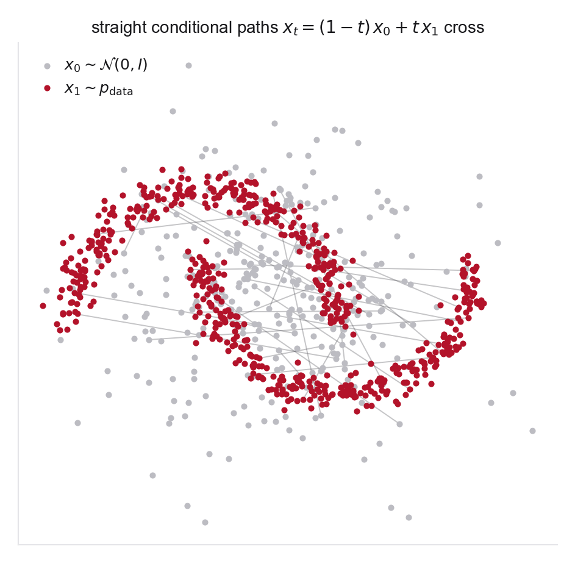

Concepts you need
- Linear interpolation paths between paired samples
- Training a small network by MSE regression (data loading, optimizer, loss curves)
- ODE integration for sampling, reusing your Problem 4 integrator
- Why predicting \(v_t = x_1 - x_0\) is a regression target, not a likelihood objective
If you get stuck
- Flow Matching, Sections 2 and 3 for the conditional flow matching idea this lab previews
- sklearn.datasets.make_moons for generating the two-moons data
- Problem 4 for the integrator and plotting scaffold, since only the velocity field is new here
- Energy distance for a two-sample metric that is a few lines of NumPy
Source note. Original lab, designed as a bridge into Flow Matching for Generative Modeling.
This problem is the first learned generative model in the bootcamp. It is intentionally simple, but it already contains the core idea of conditional flow matching, building training targets from a probability path rather than from a known exact global velocity field.
Sample \(x_0\sim\mathcal N(0,I_2)\) and \(x_1\sim p_{\mathrm{data}}\), where \(p_{\mathrm{data}}\) is the two-moons distribution. Pair samples and define
\[
x_t=(1-t)x_0+t x_1, \qquad v_t=x_1-x_0.
\]

- Train a neural network \(u_\theta(x,t)\) to predict \(v_t\) from \((x_t,t)\). Plot training and validation loss.
- Generate new samples by drawing \(X_0\sim\mathcal N(0,I_2)\) and integrating \[ \frac{dX_t}{dt}=u_\theta(X_t,t) \] from \(t=0\) to \(t=1\).
- Plot base samples, data samples, generated samples, and a set of trajectories colored by time. Comment on whether trajectories cross or bend.
- Visualize what the network actually learned by plotting \(u_\theta(\cdot,t)\) as a streamplot at \(t\in\{0,0.25,0.5,0.75,1\}\), overlaid with the sample positions at that time. Describe how the field reorganizes as \(t\) increases, where it moves mass early, and what it is still correcting near \(t=1\). This filmstrip of the learned field is the single most informative diagnostic in this lab.
- Integrate with \(N\in\{1,2,4,8,100\}\) Euler steps and plot the five resulting sample clouds side by side. Report a simple two-sample metric (for example energy distance against held-out data) alongside the plots rather than judging entirely by eye. Where do few-step samples fail first? Keep this panel, since Week 6 is entirely about making \(N=1\) work.
- Repeat the experiment with fewer training pairs. Where does the learned field fail first, in high-density regions, low-density regions, or between modes?
- Optional extension. Replace independent pairings with a simple minibatch OT pairing. Quantify straightness as the ratio of path length to chord length, and repeat the few-step experiment from part 5. Straighter paths should degrade more gracefully as steps are removed, an observation that motivates most of Week 5.
Deliverable. A notebook with loss curves, the trajectory plot, the streamplot filmstrip of the learned field, the few-step degradation panel with its metric, and (optional) the OT-pairing comparison.
Why this matters. This lab makes Week 2 and Week 4 easier. Once students have trained this toy vector field, the formal flow matching objective will feel like a principled version of something they have already implemented.